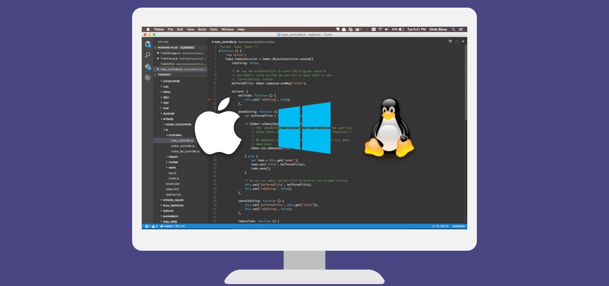

Why did we build Visual Studio Code?
Visual Studio Code combines the simplicity of a source code editor with powerful developer tooling, like IntelliSense code completion and debugging.
First and foremost, it is an editor that gets out of your way. The delightfully frictionless edit-build-debug cycle means less time fiddling with your environment, and more time executing on your ideas.
Available for macOS, Linux, and Windows
Visual Studio Code supports macOS, Linux, and Windows - so you can hit the ground running, no matter the platform.

Edit, build, and debug with ease
At its heart, Visual Studio Code features a lightning fast source code editor, perfect for day-to-day use. With support for hundreds of languages, VS Code helps you be instantly productive with syntax highlighting, bracket-matching, auto-indentation, box-selection, snippets, and more. Intuitive keyboard shortcuts, easy customization and community-contributed keyboard shortcut mappings let you navigate your code with ease.
For serious coding, you'll often benefit from tools with more code understanding than just blocks of text. Visual Studio Code includes built-in support for IntelliSense code completion, rich semantic code understanding and navigation, and code refactoring.
And when the coding gets tough, the tough get debugging. Debugging is often the one feature that developers miss most in a leaner coding experience, so we made it happen. Visual Studio Code includes an interactive debugger, so you can step through source code, inspect variables, view call stacks, and execute commands in the console.
VS Code also integrates with build and scripting tools to perform common tasks making everyday workflows faster. VS Code has support for Git so you can work with source control without leaving the editor including viewing pending changes diffs.
Make it your own
Customize every feature to your liking and install any number of third-party extensions. While most scenarios work "out of the box" with no configuration, VS Code also grows with you, and we encourage you to optimize your experience to suit your unique needs. VS Code is an open source project so you can also contribute to the growing and vibrant community on GitHub.
Built with love for the Web
VS Code includes enriched built-in support for Node.js development with JavaScript and TypeScript, powered by the same underlying technologies that drive Visual Studio. VS Code also includes great tooling for web technologies such as JSX/React, HTML, CSS, Less, Sass, and JSON.
Robust and extensible architecture
Architecturally, Visual Studio Code combines the best of web, native, and language-specific technologies. Using Electron, VS Code combines web technologies such as JavaScript and Node.js with the speed and flexibility of native apps. VS Code uses a newer, faster version of the same industrial-strength HTML-based editor that has powered the “Monaco” cloud editor, Internet Explorer's F12 Tools, and other projects. Additionally, VS Code uses a tools service architecture that enables it to integrate with many of the same technologies that power Visual Studio, including Roslyn for .NET, TypeScript, the Visual Studio debugging engine, and more.
Visual Studio Code includes a public extensibility model that lets developers build and use extensions, and richly customize their edit-build-debug experience.
Ready, set, code!
If you prefer a code editor-centric development tool or are building cross-platform web and cloud applications, we invite you to try out Visual Studio Code and let us know what you think!
Next Steps
Read on to find out about:
- Visual Studio Code User Interface - A quick orientation to VS Code.
- Intro Videos - Learn about the VS Code editor features.
- Debugging - OK time for the really fun stuff - break, step, watch.